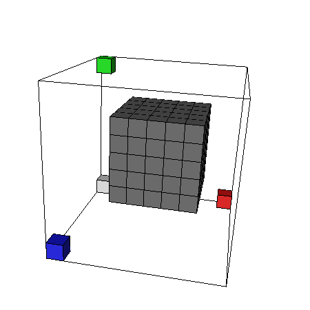

3D Discrete Voronoi diagram computation
sedtVoronoi is a simple program
based on the sedt software to
extract a discrete Voronoi diagram of a binary volume in optimal time (i.e. in O(n)
if n is the number of voxels). This implementation is based on the
Saito and Toriwaki algorithm [SAITO_1994] with the optimization proposed by
[HIRATA_1996] and [MEIJSTER_2000].
The output (Voronoi diagram) are files in the longvol format.
- Download sedtVoronoi-0.1.tgz (TAR
GZIPPED file) version 0.1
- Compilation: standard C++ program,
see the Makefile. To compile, you need the VOL and the LONGVOL libraries. To generate the
commented source files, you also need the documentation
system doxygen.
- Main references:
- Feed back: David Coeurjolly
The code is really simple and code comments can be browsed using
doxygen (just enter "make doc" and browse the resulting html
files). See the README file.
- Input: a binary volume (VOL format)
- Output:
- three volumes
(LONGVOL format) to store the coordintes (dx[x],dy[y],dz[z]) of one
of the closest background voxel at each point (x,y,z) of the object
- the SEDT transform of the input volume (see sedt)
- a 3D representation of the
Voronoi diagram (VOL format) in which we affect a color (supposed to be
unique) to each cell of the voronoi diagram
Just an example, let us consider a simple cube with length 5 (see Volgen) :

Once sedt compiled, you can launch it :
sedtVoronoi cube5.vol output
|
You will obtain the files:
output_dx.longvol
output_dy.longvol
output_dz.longvol
output_sedt.longvol
output_diagram.vol
|
dcoeurjo Last modified:
Tue Feb 4 17:42:27 MET 2003